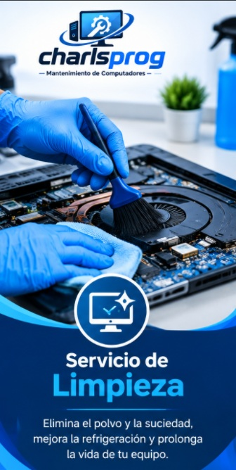
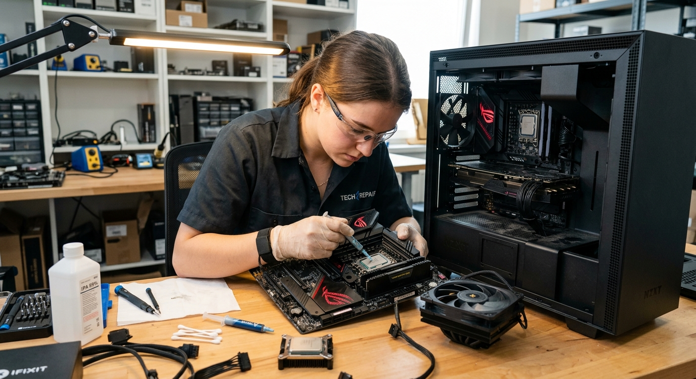
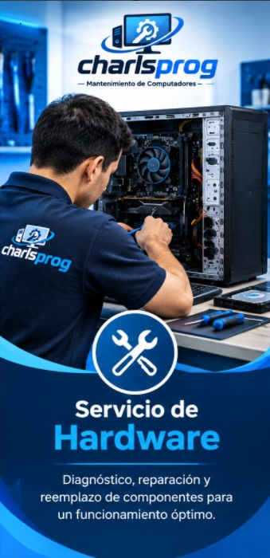
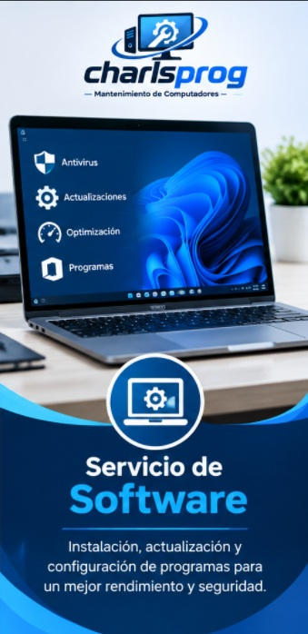

Nuestros Servicios Especializados
Selecciona la solución adecuada para recuperar la velocidad y potencia de tu computadora.

Limpieza Física Profunda
Remoción de polvo en disipadores, ventiladores y chasis para maximizar el flujo de aire.

Cambio de Pasta Térmica
Reemplazo de compuesto térmico de alto rendimiento en CPU y GPU para reducir la temperatura.

Diagnóstico de Hardware
Pruebas de estrés y revisión técnica de fuentes de poder, discos duros y memorias RAM.

Optimización de Software
Formateo limpio, eliminación de malware y configuración de controladores oficiales.